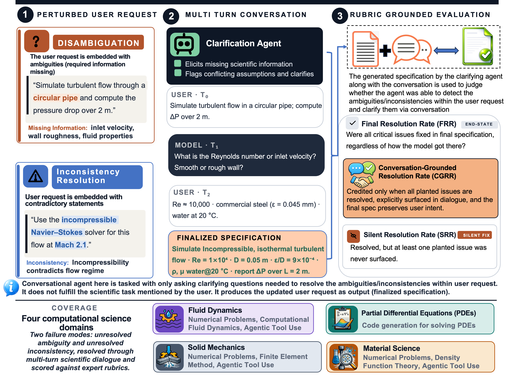
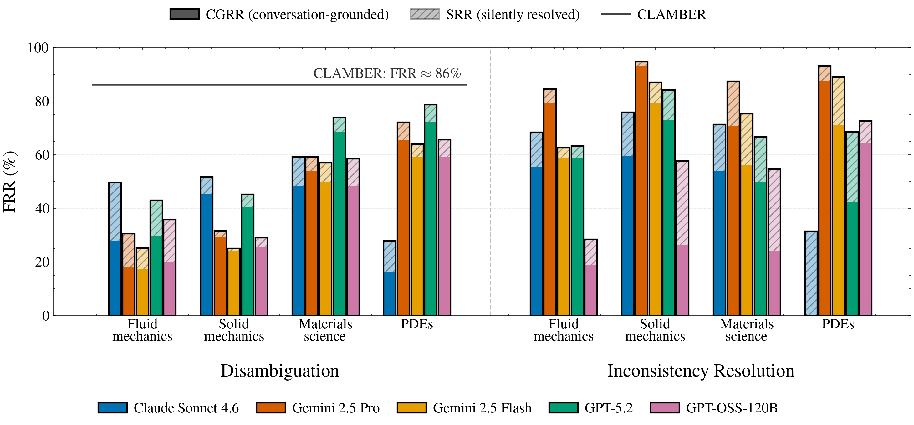
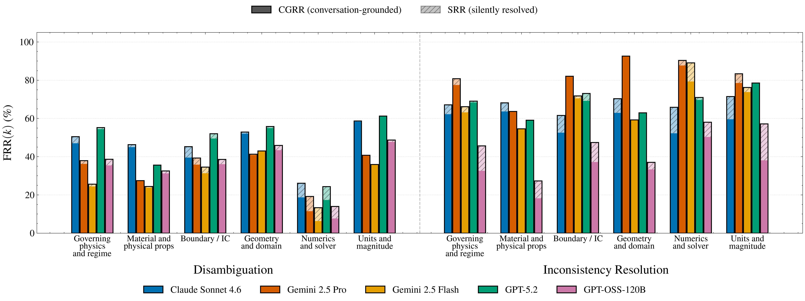
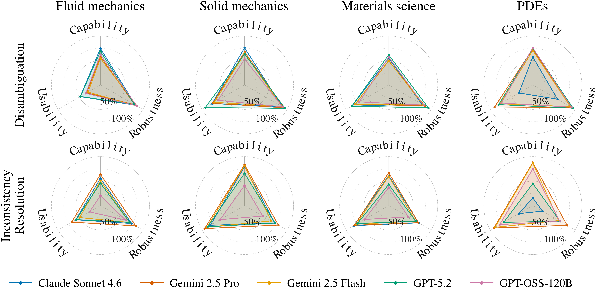
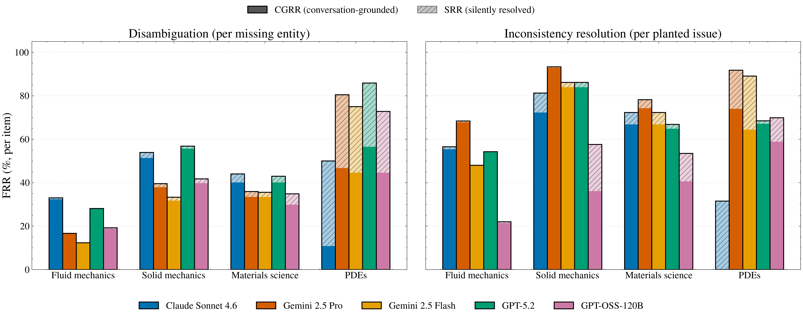

SCICONVBENCH reveals that frontier LLMs resolve only 52.7% of disambiguation cases in fluid mechanics and frequently make silent assumptions, highlighting a critical upstream failure in scientific task formulation.
本文提出了SCICONVBENCH基准，专门评估大语言模型在计算科学领域（如流体力学）中通过多轮对话澄清模糊或不一致用户请求的能力。实验表明，最先进的模型在流体力学消歧任务中仅解决52.7%的案例，且常做出隐性假设，揭示了科学任务制定环节的关键上游失败。该基准为构建可靠的科学AI助手提供了系统化的评估框架。
Deep Note — sciconvbench
0) Metadata
- Title: SCICONVBENCH: Benchmarking LLMs on Multi-Turn Clarification for Task Formulation in Computational Science
- Alias: sciconvbench
- Authors: Nithin Somasekharan, Youssef Hassan, Shiyao Lin, Gihan Panapitiya, Patrick Emami, Anurag Acharya, Sameera Horawalavithana, Shaowu Pan
- arXiv ID: 2605.18630
- Published:
- Links:
- Abs: https://arxiv.org/abs/2605.18630
- HTML: https://arxiv.org/html/2605.18630v1
- PDF: https://arxiv.org/pdf/2605.18630
- Tags: benchmark, multi-turn-clarification, computational-science, llm-evaluation, task-formulation
- Domains: ai_safety, system_safety
- Rating: 4/5 (base 1 + quality 2 + observation 1)
1) Why-read
SCICONVBENCH reveals that frontier LLMs resolve only 52.7% of disambiguation cases in fluid mechanics and frequently make silent assumptions, highlighting a critical upstream failure in scientific task formulation.
2) CRGP
C — Context
LLMs are increasingly used as scientific AI assistants, but existing benchmarks evaluate capabilities like code generation and reasoning assuming a well-posed problem. In practice, scientific assistance often starts with ill-posed user requests that require multi-turn clarification before reliable computation.
R — Related work
- CLAMBER: general-domain clarification dataset, but models resolve 86.1% of cases vs. as low as 18.2% on SciConvBench disambiguation.
- AmbigQA, CAmbigNQ: treat ambiguous questions requiring multiple interpretations or explicit clarification.
- SciBench, SciCode, ScienceAgentBench: evaluate scientific reasoning and code generation given complete problem formulations.
- MT-Bench, Chatbot Arena: multi-turn evaluation but not focused on scientific domain grounding.
- τ-bench, MirrorBench: agent benchmarks with simulated users, but not tailored to computational science clarifications.
G — Gap
Existing clarification benchmarks focus on general-purpose or information-seeking ambiguities (e.g., polysemy, subtopic preference), not on domain-specific scientific requirements like missing boundary conditions or contradictory constitutive assumptions. No prior benchmark systematically evaluates multi-turn clarification for task formulation in computational science.
P — Proposal
SCICONVBENCH introduces a benchmark spanning fluid mechanics, solid mechanics, materials science, and PDEs, with two task types: disambiguation (missing info) and inconsistency resolution (contradictory info). It pairs a structured task ontology with a rubric-based evaluation measuring clarification behavior, conversational grounding, and final-specification fidelity.
---
4) Experiments
Main results
Gemini 2.5 Pro resolves only 18.2% of disambiguation cases in fluid mechanics vs. 86.1% on CLAMBER. Best model resolves 52.7% of disambiguation in fluid mechanics. Inconsistency resolution is easier than disambiguation across domains. Frontier models show a persistent gap between final correctness and conversation-grounded resolution.
Ablation
Using different LLM judges (e.g., GPT-4 vs. Gemini) for evaluation yields consistent relative rankings but absolute scores vary; the gap between final-specification fidelity and conversation-grounded resolution is larger for inconsistency resolution tasks than for disambiguation.
Limitations
['The benchmark uses simulated users, which may not fully capture real-world user behavior (e.g., uncooperative or vague responses).', 'Only four computational science domains are covered; other fields (e.g., biology, chemistry) are not included.', 'Evaluation relies on rubric-based LLM judging, which may introduce biases or miss subtle grounding errors.']
5) Why it matters
- Highlights that upstream task formulation is a major bottleneck for reliable scientific AI assistants, directly relevant to your work on system safety and AI alignment.
- Provides a structured ontology and evaluation framework that could be adapted to other safety-critical domains (e.g., digital identity, cryptography).
- Demonstrates that current models silently assume and repair specifications, a failure mode that undermines trust in autonomous scientific workflows.
- The gap between final correctness and conversation-grounded resolution offers a concrete metric for evaluating conversational grounding in safety-critical systems.
6) Next steps
- [ ] Evaluate your own LLM-based scientific assistant on SciConvBench to identify weaknesses in task formulation.
- [ ] Extend the benchmark to include adversarial or uncooperative user simulators to test robustness.
- [ ] Develop training data or fine-tuning strategies that penalize silent assumptions and reward explicit conversational grounding.
- [ ] Apply the rubric-based evaluation framework to other domains (e.g., cryptography protocol specification) to assess conversational safety.
7) Scoring
4/5 = base 1 + quality 2 + observation 1
SCICONVBENCH：基准测试大语言模型在计算科学任务制定中的多轮澄清能力
主要结论 - 前沿LLM在流体力学消歧任务中仅解决52.7%的案例，远低于通用领域基准（如CLAMBER的86.1%）。 - 模型常做出隐性假设并自行修复规范，这种失败模式会破坏对自主科学工作流的信任。 - 不一致性解决任务比消歧任务更容易，但两者均存在最终正确性与对话基础解决之间的差距。 - 该基准提供了结构化的任务本体和基于量规的评估方法，可推广至其他安全关键领域。
1) 阅读理由
SCICONVBENCH揭示前沿LLM在流体力学中仅解决52.7%的消歧案例，且常做出隐性假设，凸显了科学任务制定中的关键上游失败。
2) CRGP（背景 / 相关工作 / 差距 / 方案）
背景： 大语言模型越来越多地被用作科学AI助手，但现有基准假设问题已明确定义，评估代码生成和推理能力。实际中，科学辅助通常始于模糊的用户请求，需要多轮澄清才能进行可靠计算。
相关工作： CLAMBER是通用领域澄清数据集，模型解决86.1%的案例，而在SciConvBench消歧任务中低至18.2%；AmbigQA、CAmbigNQ处理需要多种解释或明确澄清的模糊问题；SciBench、SciCode、ScienceAgentBench在给定完整问题表述下评估科学推理和代码生成；MT-Bench、Chatbot Arena进行多轮评估但未聚焦科学领域；τ-bench、MirrorBench是带模拟用户的智能体基准，但未针对计算科学澄清。
差距： 现有澄清基准聚焦通用或信息寻求型模糊（如多义词、子主题偏好），而非领域特定的科学需求（如缺失边界条件或矛盾的本构假设）。尚无基准系统评估计算科学任务制定中的多轮澄清。
提案： SCICONVBENCH基准涵盖流体力学、固体力学、材料科学和偏微分方程，包含两种任务类型：消歧（缺失信息）和不一致性解决（矛盾信息）。它将结构化任务本体与基于量规的评估相结合，衡量澄清行为、对话基础以及最终规范的保真度。
3) 实验
主要结果：Gemini 2.5 Pro在流体力学消歧任务中仅解决18.2%的案例，而在CLAMBER上为86.1%。最佳模型在流体力学消歧中解决52.7%的案例。不一致性解决在所有领域中比消歧更容易。前沿模型在最终正确性与对话基础解决之间持续存在差距。
消融实验
使用不同的LLM评判器（如GPT-4 vs. Gemini）进行评估时，相对排名一致但绝对分数有差异；最终规范保真度与对话基础解决之间的差距在不一致性解决任务中比在消歧任务中更大。
局限性
['基准使用模拟用户，可能无法完全捕捉真实用户行为（如不合作或模糊的回应）。', '仅涵盖四个计算科学领域；其他领域（如生物学、化学）未包含。', '评估依赖基于量规的LLM评判，可能引入偏见或遗漏细微的接地错误。']
4) 重要性
- 强调上游任务制定是可靠科学AI助手的主要瓶颈，直接关系到系统安全和AI对齐工作。
- 提供了结构化的本体和评估框架，可适应其他安全关键领域（如数字身份、密码学）。
- 证明当前模型会隐性假设并自行修复规范，这种失败模式削弱了对自主科学工作流的信任。
- 最终正确性与对话基础解决之间的差距为评估安全关键系统中的对话接地提供了具体指标。
5) 下一步
- [ ] 在SciConvBench上评估你自己的基于LLM的科学助手，以识别任务制定中的弱点。
- [ ] 扩展基准以包含对抗性或非合作用户模拟器，测试鲁棒性。
- [ ] 开发训练数据或微调策略，惩罚隐性假设并奖励明确的对话接地。
- [ ] 将基于量规的评估框架应用于其他领域（如密码学协议规范），评估对话安全性。




